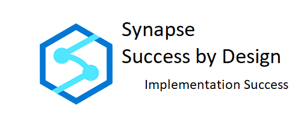

Assessment #
Overview #
This assessment exercise will provide you with the opportunity gather all the available information about the existing environment, environmental requirements, project requirements, constraints, timelines, pain points, etc. This information will be the basis of your later evaluations and checkpoint activities as it will be invaluable data to validate and compare against the project solution as it is being planned, designed, and developed. Take the time necessary to gather all this recommended information and have the necessary discussions with project stakeholders, business users, solution designers and subject matter experts (SME) of the existing solution and environment. The information gathered here will help you in evaluating that the designed solution is implementing the right components of Azure Synapse Analytics to support your solution and meet overall expectations and honoring corporate requirements.
Workload Assessment #
Environment #
-
Describe your existing analytical workload:
-
Type of workload (Datawarehouse, bigdata etc.)?
-
How is this workload helping the business? What are the Use case scenarios?
-
What is the business driver for this analytical platform and for potential migration?
-
Gather the details behind existing architecture, design, and implementation choices?
-
Gather details about all existing upstream and downstream dependent components and consumers?
-
-
Are you migrating existing data warehouse(s) (Netezza, Snowflake, Teradata, APS, SQL Server)?
-
Are you migrating a Big Data platform (Cloudera, Hortonworks etc.)?
-
Gather the architecture and dataflow diagram(s) for current analytical environment?
-
Where are the data sources for your planned analytical workloads located (Azure, Other cloud providers, On-Premises)?
-
Total size of dataset(s) (Historical and Incremental) being targeted to Azure. What is the current rate of growth of your dataset(s)? What is the projected rate of growth of your dataset(s) for the next 2-5 years?
-
Do you have an existing Data Lake? Gather as much detail as possible - file types (Parquet, csv etc.), sizes, security configuration, etc.?
-
Do you have semi-structured, unstructured data to process and analyze?
-
Describe the nature of the data processing (Batch, real time processing)?
-
Do you need interactive data exploration from relational data, data lake and other sources?
-
Do you need real time data analysis and exploration from operational data sources?
-
What are pain points and limitations in current environment?
-
What source control and Dev ops tool(s) are you using today?
-
Do you have a use case to build a hybrid (Cloud and on-prem) analytical solution, Cloud only or multi- cloud?
-
Gather data on existing cloud environment – single-cloud provider or multi-cloud provider.
-
Gather plans on future cloud environment – single cloud or multi cloud provider.
-
What are the RPO/RTO/HA/SLA requirements in the existing environment?
-
What are the RPO/RTO/HA/SLA requirements in the planned environment?
Analytical workload Personas #
-
Who are the different data personas (Data Scientist, Data Engineer, Data Analyst etc.)?
-
Describe the access control requirement on analytical platform for these personas.
-
Identify the platform owners who is responsible to provision compute and grant access.
-
Describe how different data personas are collaborating today?
-
Do you have multiple teams collaborating\sharing the same analytical platform? What is the access control\isolation requirements for each of these teams/data sets?
-
What are different client tools end user use to interact with Analytical platform?
ETL\ELT, Transformation, and orchestration #
-
What tools are you using today for data ingestion, ETL/ELT?
-
Where do these tools exist in the existing environment (On prem, Cloud)?
-
What is your current data load/update requirements (real-time/micro batch/hourly/daily/weekly/monthly)?
-
Describe the transformation requirements for each layer (Bigdata [data lake], Datawarehouse etc.)?
-
What is the current programming approach(es) to transforming the data (No code, low code, programming like SQL, Python, Scala, C#, etc.)?
-
What is the preferred planned programming approach to transform the data (No code, low code, programming like SQL, Python, Scala, C#, etc.)?
-
What tools are currently in use for data orchestration to automate the data driven process?
-
Where are the data sources for your existing ETL located (Azure, Other cloud provider, On-Premises)?
-
What are the existing data consumptions tools (Reporting, BI tools, open-source tools) that require integration with analytical platform?
-
What are the planned data consumptions tools (Reporting, BI tools, open-source tools) that will require integration with analytical platform?
Network and security #
-
What regulatory requirements do you have for your data?
-
If your data contains PII\PCI\HIPPA data, has your security group certified Azure for this data? If so, which services in Azure?
-
Describe your user authorization and authentication requirements?
-
Are there security issues which could limit the access to data during implementation?
-
Is there test data available to be used during implementation development and testing?
-
Describe the organizational network security requirements on the Analytical compute and storage (Private network, public network, firewall restriction etc.)?
-
Describe the network security requirements for client tools to access analytical compute and storage? (Through peered network, private end point etc.)
-
Describe the current network setup between on prem and Azure (Express route, site to site etc.)?
-
Use below checklists and add\modify as per your needs:
Data Protection
-
Data in Transit
-
Data Encryption at Rest (Service & BYOK)
-
Data Discovery and Classification
Access Control
-
Object Level Security
-
Row Level Security
-
Column Level Security
-
Dynamic Data Masking
Authentication
-
SQL Login
-
Azure Active Directory
-
Multi-Factor Authentication
Network Security
-
Virtual Networks
-
Firewall
-
Azure ExpressRoute
Threat Protection
-
Thread Detection
-
Auditing
-
Vulnerability Assessment
Azure Environment #
-
Are you currently using Azure? For Production?
-
If you are using Azure, which services are you using?
-
If you are using Azure, which regions are you using?
-
Do you have an Express Route in place? What is its bandwidth?
-
Do you have budget approval to provision required services in Azure?
-
How do you provision and manage resource today? (ARM, Terraform...)
-
Is your key team familiar with Synapse analytics.? Any training required?
Data Consumption and other Tools and services #
-
Describe how and what tools you currently use to perform activities like ingest, explore, prepare, and visualize the data. Identify what tools you plan to use to perform activities like ingest, explore, prepare, and visualize the data.
-
What applications planned to interact with analytical platform.? (Ex: Tools like PBI, Qlik, etc.).
-
Identify all data consumers
-
Identify data exports and data sharing scenarios
Assessment by Synapse analytics Services #
This section covers assessment aligned with services within Azure Synapse analytics. Synapse has the following components for compute and data movement:
Synapse SQL
Synapse SQL is a distributed query system for T-SQL that enables data warehousing and data virtualization scenarios and extends T-SQL to address streaming and machine learning scenarios.
Synapse SQL offers both serverless and dedicated resource models.
Serverless SQL Pool
Serverless SQL pool is a distributed data processing system, built for large-scale data, and computational functions. There’s no infrastructure to setup or clusters to maintain. Best for unplanned or burst workloads, use the always available, serverless SQL endpoint. The recommended scenarios include quick data exploration on files directly on Data Lake, Logical date warehouse, Data Transformation of raw data.
Dedicated SQL Pool
Represents a collection of analytic resources that are provisioned when using Synapse SQL. The size of a dedicated SQL pool (formerly SQL DW) is determined by Data Warehousing Units (DWU). For a full management capability of a data warehouse with predictable and high performance for continuous workloads, create dedicated SQL pools to reserve processing power for data stored in SQL tables.
Apache Spark
Apache Spark for Azure Synapse deeply and seamlessly integrates Apache Spark--the most popular open-source big data engine used for data preparation, data engineering, ETL, and machine learning.
Data Integration Pipelines
Azure Synapse contains the same Data Integration engine and experiences as Azure Data Factory, allowing you to create rich at-scale ETL pipelines without leaving Azure Synapse Analytics.
Additional Assessment information focused on Synapse SQL #
Assessment questions to help determine the best SQL Pool Type (dedicated or serverless) #
-
Do you want to build a traditional relational data warehouse by reserving processing power for data stored in SQL tables?
-
Do use cases demand predictable performance?
-
Do you want to a build logical warehouse on top of a Data Lake?
-
Do you want to query data directly from a data lake?
-
Do you want to explore data from?
 {width=“6.319327427821523in”
height=“2.9942541557305336in”}
{width=“6.319327427821523in”
height=“2.9942541557305336in”}
Additional Assessment information focused on dedicated SQL Pool #
Platform
-
What is the current DW platform (SQL Server, Netezza, Teradata, Greenplum, greenfield, etc.)?
-
If this is migration workload, provide make and Model of your Appliance for each Environment? (CPUs, GPUs, memory).
-
If this is appliance migration, when was the Hardware Purchased?
-
If this is appliance migration, Has the appliance been depreciated 100%? If not, when will depreciation end? Now how much Capex is still left.
-
Any a Hardware/Network Architecture diagram...?
-
Where are the data sources for your planned Azure Data Warehouse located (Azure, Other cloud provider, On-Premises)?
-
What are the data hosting platforms of the data sources for your data warehouse - (DB2, Oracle, SQL Server, Azure SQL, Azure Blob storage, AWS, Hadoop, etc.)?
-
Are any of the data sources data warehouses? Which ones?
-
Identify all ETL/ELT/Data Loading scenarios - Batch windows, streaming, near real-time. Identify existing SLAs for each and document the expected SLAs in the new environment.
-
What is the current data warehouse sizes?
-
Rate of growth of dataset being targeted for Synapse Dedicated sql pool.
-
Describe the environments you are using today (Dev/QA/Prod/DR).
-
Which tools are currently in place for data movement (SSIS, Robocopy, Informatica, SFTP, ADF)?
-
Are you planning on loading Realtime or near-real time data?
Database(s)
-
Number of objects in each data warehouse - schemas, tables, views, stored procedures, functions. Overall complexity – Star or snowflake or other data structure.
-
Largest tables in terms of size\number of records?
-
Widest table in terms of number of columns?
-
Is there already a data model designed for your data warehouse? Is it a Kimball, Inmon or Star Schema design?
-
Are Slowly Changing Dimensions (SCD) in use? If so, which types (SCDI, SCDII, etc.).
-
Will a Semantic Layer be implemented using Relational Data Marts or Analysis Services (Tabular/Multi-Dimensional) or another product/technique?
-
What is the HA/RPO/RTO/Data archiving requirements?
-
What is the region replication requirement?
Workload Characteristics
-
What is the estimated number of concurrent users/jobs accessing the data warehouse during peak hours?
-
What is the estimated number of concurrent users/jobs accessing the data warehouse during off peak hours (normal hours)?
-
Are there a period where there will be zero users or jobs?
-
What are your query execution performance expectations for interactive queries?
-
What are your data load performance expectations for daily/weekly/monthly data loads/updates? (ELT/ETL loading)
-
What are your query execution expectations for reporting/analytical queries?
-
How complex will be the most the commonly executed queries?
-
What percentage of your total dataset size is your Active dataset?
-
Approximately what percentage of the workload is anticipated for loading/updating, batch processing/reporting, interactive query, and analytical processing?
-
Identify the data consuming pattern and platforms:
-
Current and planned reporting method and tools.
-
Which application/analytical tools will be accessing the data warehouse?
-
Number of concurrent queries?
-
Average number of active queries at any point?
-
Nature of data access (Interactive, ad hoc, exports etc.)
-
Data personas and complete description of their interaction with the data.
-
Maximum number of concurrent connections
-
-
Query Performance SLA pattern by:
-
dashboard users
-
batch reporting
-
data mining users
-
ETL process
-
-
What are the security requirements for the existing environment and for the new environment (row level security, column security requirements, access control, encryption etc.)?
-
Do you have use cases to integrate Machine learning model scoring with SQL?
Additional Assessment information focused on serverless SQL Pool #
-
Do you have use cases to discover and explore data from a Data Lake using familiar T-SQL?
-
Do you have use cases to build a logical warehouse on top of a data lake?
-
Identify if there are use cases to transform data in Data Lake without moving data out from Data Lake.
-
Is your data already in Azure Data Lake Storage or Azure Blob storage?
-
If data is already in Azure Data Lake Storage, do you have good partition strategy in the data lake?
-
Do you have operational data in Cosmos dB? Do you have use cases for Realtime analytics on Cosmos Db without impacting transactions?
-
Identify the file types in the Data Lake.
-
Identify the query performance SLA. Does your use case demand predictable performance and cost?
-
Do you have unplanned or bursty SQL analytical workloads?
-
Identify the data consuming pattern and platforms:
-
Current and planned reporting method and tools.
-
Which application/analytical tools will be accessing the Serverless sql pool?
-
Number of active queries.?
-
Nature of data access (Interactive, ad hoc, exports etc.)
-
Data personas?
-
Concurrent connections?
-
Query complexity?
-
-
What are the security requirements (Access control, encryption etc.)?
-
What is the required T-SQL functionality (Stored proc, function etc.)?
-
Identify number of queries hitting the Serverless SQL pool and result set size from each query.
Synapse Serverless SQL Pool has three major use cases:
-
Basic discovery and exploration - Quickly reason about the data in various formats (Parquet, CSV, JSON) in your data lake, so you can plan how to extract insights from it.
-
Logical data warehouse – Provide a relational abstraction on top of raw or disparate data without relocating and transforming data, allowing always up-to-date view of your data.
-
Data transformation - Simple, scalable, and performant way to transform data in the lake using T-SQL, so it can be fed to BI and other tools or loaded into a relational data store (Synapse SQL databases, Azure SQL Database, etc.).
For complete guide on Synapse Serverless Sql Pool follow below learning path:
[Build data analytics solutions using Azure Synapse serverless SQL pools
- Learn | Microsoft Docs](https://docs.microsoft.com/en-us/learn/paths/build-data-analytics-solutions-using-azure-synapse-serverless-sql-pools/)
Different professional roles can benefit from serverless SQL pool:
-
Data Engineers can explore the lake, transform, and prepare data using this service, and simplify their data transformation pipelines. For more information, check this [tutorial]{.ul}.
-
Data Scientists can quickly reason about the contents and structure of the data in the lake, thanks to features such as OPENROWSET and automatic schema inference.
-
Data Analysts can [explore data and Spark external tables]{.ul} created by Data Scientists or Data Engineers using familiar T-SQL language or their favorite tools, which can connect to serverless SQL pool.
-
BI Professionals can quickly [create Power BI reports on top of data in the lake]{.ul} and Spark tables.
T-SQL Feature Comparison between SQL Pool Dedicated pool and Serverless Pool:
[T-SQL feature differences in Synapse SQL - Azure Synapse Analytics | Microsoft Docs]{.ul}
Additional Assessment information focused on Spark Pool #
-
Identify the workloads that require data engineering and/or data preparation.
-
Clearly define the types of transformations.
-
Identify if you have unstructured data to process.
-
If you are migrating from an existing Spark\Hadoop workload:
-
What is the existing big data platform (Cloudera, Hortonworks, Cloud services etc.)?
-
If it is a migration from on-prem, has hardware\License been Expired or depreciated? If not, when will depreciation\License will end?
-
Existing cluster type, Client tools?
-
Required Libraries, Spark versions?
-
Is it a Hadoop migration to Spark?
-
Current\preferred programming languages.
-
Type of workload (Big data, ML, etc.)?
-
Existing and planned client tools (IDE’s) and reporting platforms?
-
Security requirements?
-
Current pain points and limitations?
-
-
Do you plan to use or are currently using Delta Lake?
-
How do you manage package today?
-
Identify the required compute cluster types?
-
Identify if cluster customization is required?
Spark pools in Azure Synapse Analytics enable the following key scenarios:
-
Data Engineering/Data Preparation - Apache Spark includes many language features to support preparation and processing of large volumes of data so that it can be made more valuable and then consumed by other services within Azure Synapse Analytics. This is enabled through multiple languages (C#, Scala, PySpark, Spark SQL) and supplied libraries for processing and connectivity.
-
Machine Learning - Apache Spark comes with MLlib, a machine learning library built on top of Spark that you can use from a Spark pool in Azure Synapse Analytics. Spark pools in Azure Synapse Analytics also include Anaconda, a Python distribution with a variety of packages for data science including machine learning. In addition, Apache Spark on Synapse provides pre-installed libraries for Microsoft Machine Learning, MML, a fault-tolerant, elastic, and RESTful machine learning framework. When combined with built-in support for notebooks, you have an environment for creating machine learning applications.
To get started with Synapse spark refer below guided learning:
What is Apache Spark - Azure Synapse Analytics | Microsoft Docs
Perform data engineering with Azure Synapse Apache Spark Pools - Learn | Microsoft Docs
Azure Spark supports Delta Lake, for complete guide follow the below guide:
Conclusion #
An effective assessment will help you to understand the existing analytical environment with current data analytical use cases and the planned analytical environment including future data analytics requirements.
This assessment is a guide help evaluate the solution design and make informed technology recommendations for the best services to implement within the Azure Synapse.
By the end of the assessment, you should have clear view of the existing platform, Analytical use cases, pain points and expectations for the new platform.